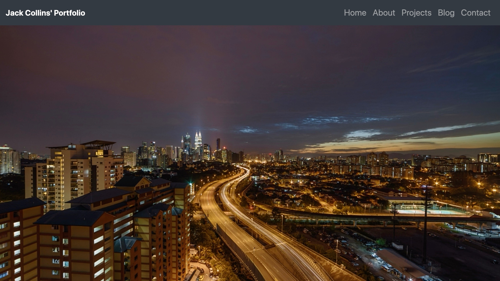
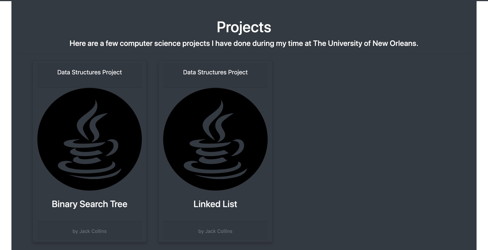
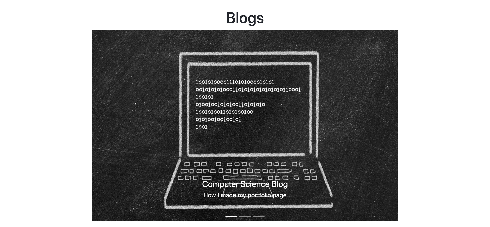
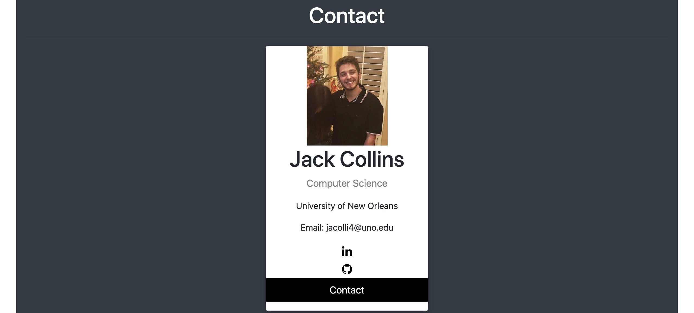

February 29th, 2020
February 29th, 2020
For my second blog post, I am going to take you through the process of how I designed my portfolio page. I wanted to keep the page simple but also show off the skills I have learned in my web design class so far. The page was completely remodeled from the original portfolio page I had made in class, and now has a more complete style to it.
The portfolio page has five sections to it: the jumbotron, about me, projects, blog posts, and contact section. In the rest of this blog post I am going to go through each section and describe what I changed in the page, and how I was able to do so.
For the jumbotron section, I switched the photo to a video of a time lapse of a city. I put the video on autoplay, looped it, and muted it. This visual adds more charactersitic and life to the page than the photo did. It also is not too distracting since it is muted and its just a fixed shot of a city.
I also changed the background color of the section to all white to keep the focus on the video and not have it a color that would be
For this section, I wanted to make it more interactive with the user rather than just a table of facts about me. I created tabs that would display the facts about me and when the tabs were clicked on, they would expand with the information.
I also had the tabs change to a darker color when the cursor moves over each one. When a tab is clicked on, the color would lock and stay that darker color, modifying which tab was currently open. 
This section was a bit challenging because I do not have any projects outside of my college ciriculum so I was unsure whcih projects I would include. I chose two projects from my data structures class, and linked them to a repository on my github page. For each of the projects I added the javascript logo, to show the user what langauge was used for that project.
For this section I added another interactive section and put a carousel image slider that contains each blog post on a slide along with a link to them. I changed the background color to black and the text to Roboto from google fonts. I also added buttons that will let the user move from one photo to the next.
For this section I created a card that displays a photo of me, my email, and the univeristy I attend. I also have link to my github and linkedin accounts with the logos of the company that have the link embedded in them.
Jack Collins
The University of New Orleans
Email: jacolli4@uno.edu